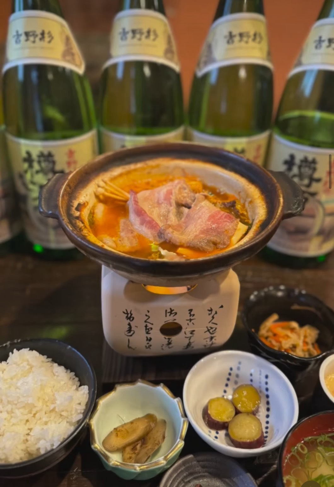
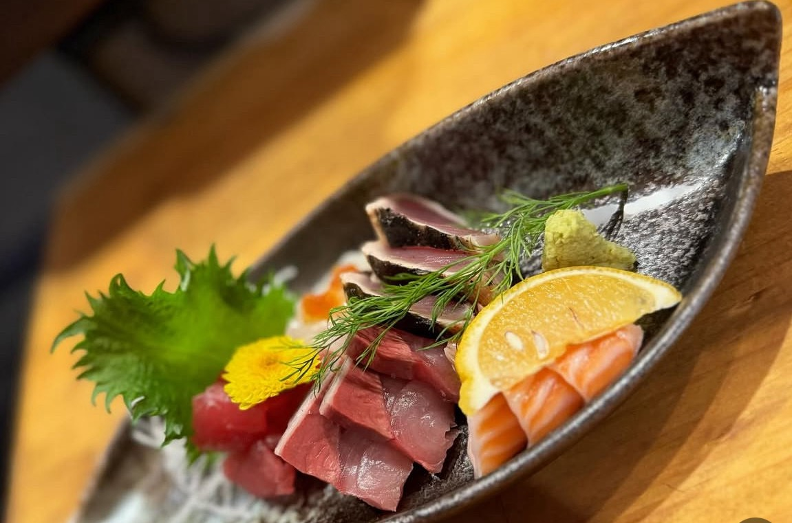
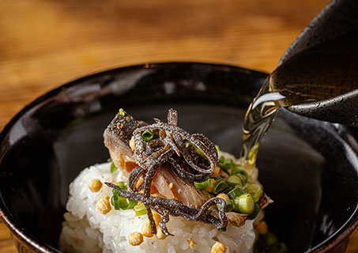
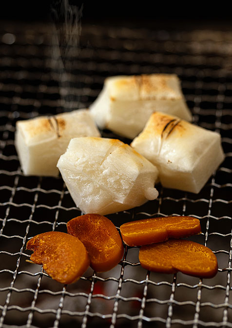
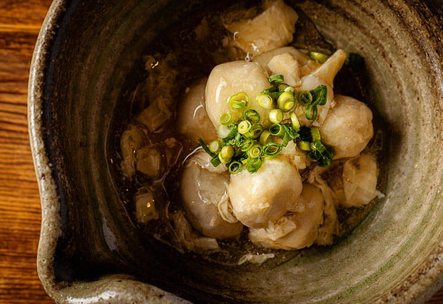
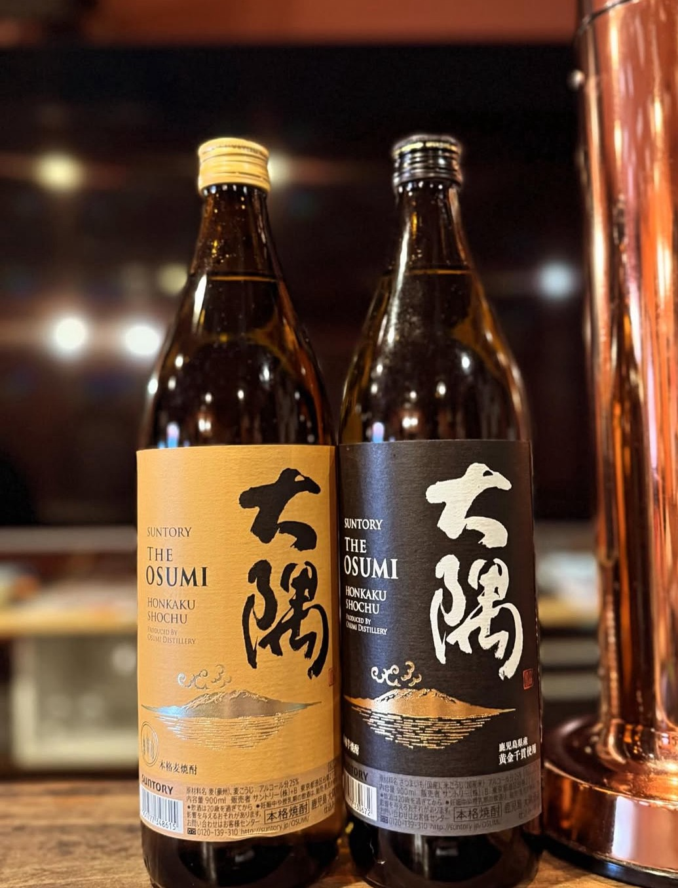
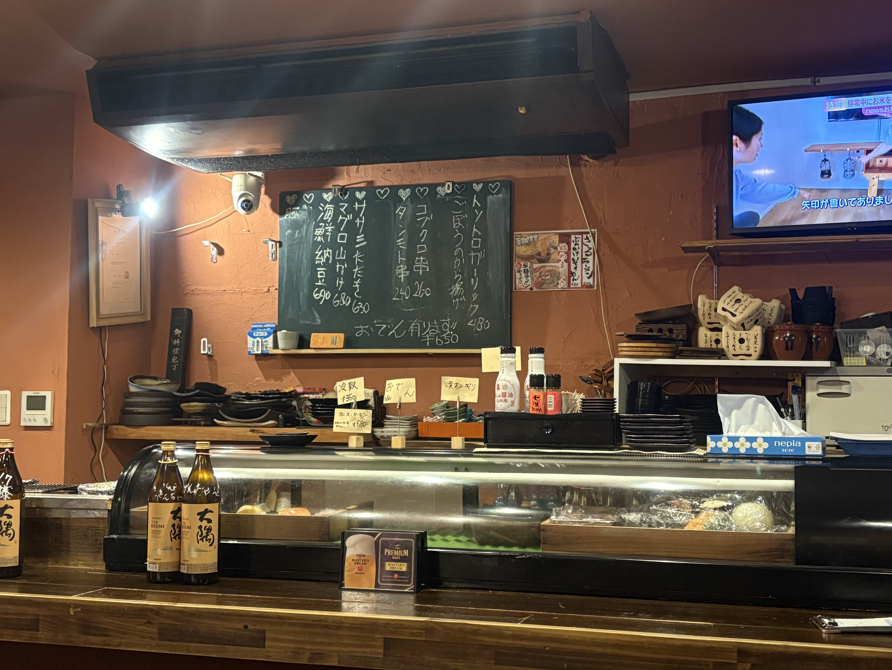
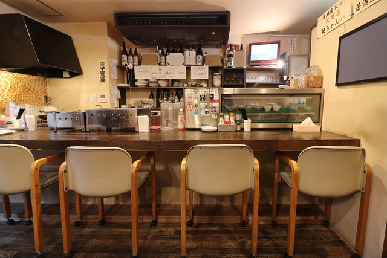
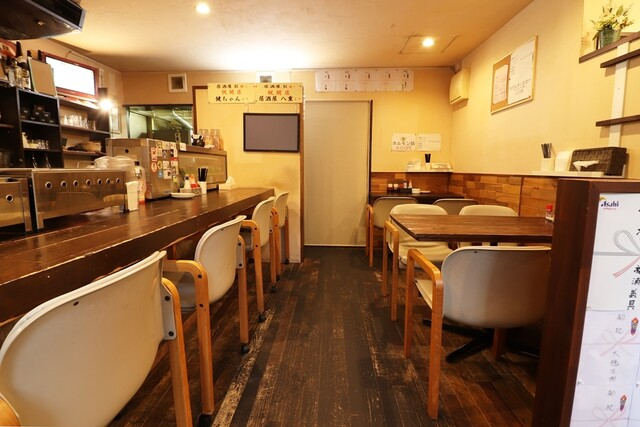
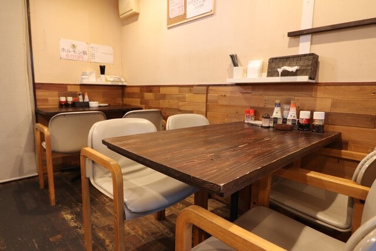

NISHINARI
その日いちばんの海の幸を、
一杯とともに。
SAKE & SEAFOOD
気取らず、旨いものを
心ゆくまで。
大阪府大阪市西成区にあります。
「居酒屋R」は、
地域の皆様をはじめ、観光で西成を訪れる方にも気軽にお立ち寄りいただける居酒屋です。
新鮮な食材を使用した料理と、お酒に合う多彩な一品料理をご用意し、
アットホームで居心地の良い空間づくりを大切にしています。
お一人様でのちょい飲みはもちろん、ご友人とのお食事や各種ご宴会にもご利用いただけます。
西成ならではの温かい雰囲気の中で、美味しい料理とお酒を囲みながら、
心地よいひとときをお過ごしください。
スタッフ一同、皆様のご来店を心よりお待ちしております。

鍋NABE

魚FISH
CONCEPT
居酒屋Ｒのこだわり
"旨い魚"と"良い酒"に、まっすぐ。
西成の路地にのれんを掲げる
「居酒屋Ｒ」
毎朝仕入れる鮮魚を、刺身に、揚げ物に、鍋に
素材の持ち味をいちばん活かせるかたちでお出しします。
名物の舟盛りや伊勢海老料理はもちろん、 全国から集めた日本酒・焼酎との相性も自慢。 肩ひじ張らずに"本物"を味わえる一軒です。




DRINK
お酒
料理に寄り添う一杯を。
店主が選ぶ日本酒に、本格焼酎、ハイボールやサワーまで。 海の幸を引き立てる一杯を、豊富に取り揃えています。
- 日本酒全国の蔵から厳選
- 本格焼酎芋・麦・米を各種
- ビール・ハイボールキンキンの一杯
- サワー・ソフトドリンク各種ご用意
GALLERY
店内・
お料理ギャラリー




NEWS
お知らせ
INFORMATION
店舗情報
- 店名
- 西成居酒屋Ｒ
- 住所
- 〒557-0004
大阪府大阪市西成区萩之茶屋1-7-12
- 営業時間
- 17:00〜24:00（L.O. 23:30）
- 定休日
- 不定休
- 席数
- 11席（カウンター5席、テーブル2席（4名、2名））
- ご予約
- お電話にて承ります